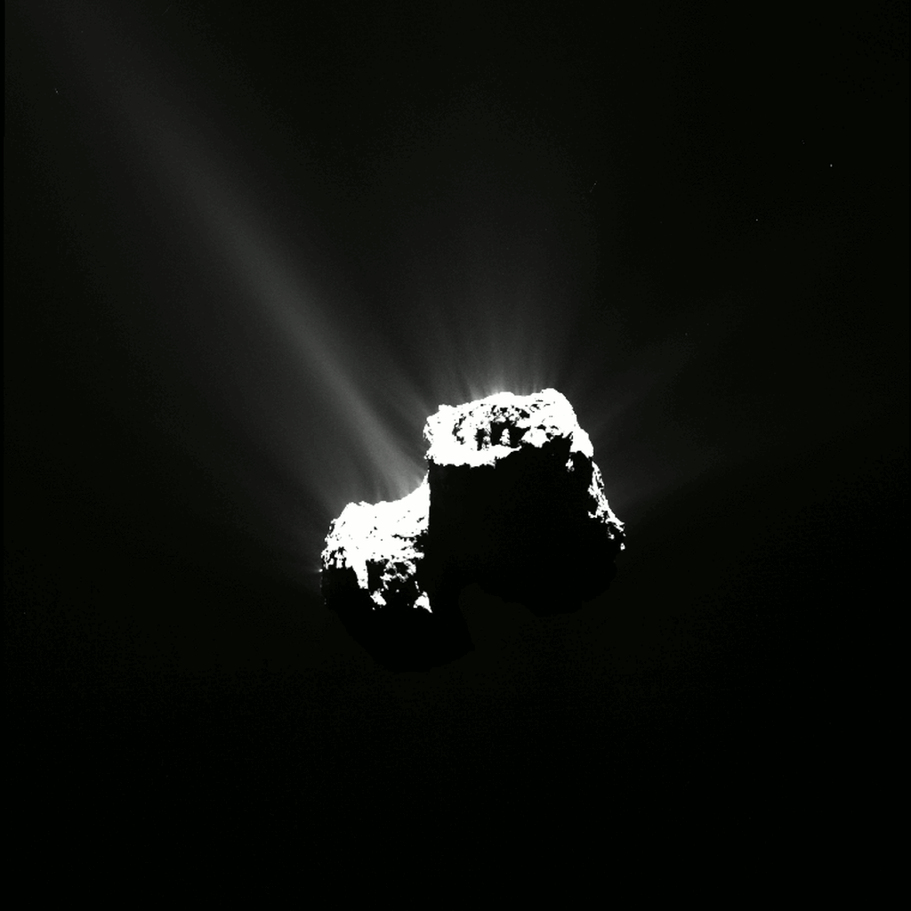

×
Home🏡
Planets🪐
Comets☄️
Galaxies🌌
Webpage Developer⚙️
Contact📞
☰ Menu
|||☄ COMET ||| ☄ COMET ||| ☄ COMET ||| ☄ COMET ||| ☄ COMET ||| ☄ COMET ||| ☄ COMET ||| ☄ COMET |||☄ COMET ||| ☄ COMET ||| ☄ COMET ||| ☄ COMET ||| ☄ COMET ||| ☄ COMET ||| ☄ COMET ||| ☄ COMET |||☄ COMET ||| ☄ COMET ||| ☄ COMET ||| ☄ COMET ||| ☄ COMET ||| ☄ COMET ||| ☄ COMET ||| ☄ COMET |||☄ COMET ||| ☄ COMET ||| ☄ COMET ||| ☄ COMET ||| ☄ COMET ||| ☄ COMET ||| ☄ COMET ||| ☄ COMET |||
Press To Read 67P/Churyumov–Gerasimenko

Halley's Comet
Comet Hale–Bopp
Comet Encke
Comet Swift–Tuttle
Tempel 1
Comet Shoemaker–Levy 9
67P/Churyumov–Gerasimenko
81P/Wild